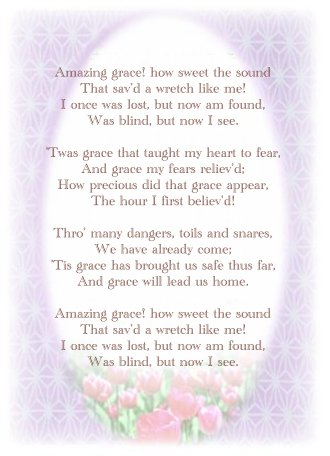

|
La musique et la vie
|
La grâce stupéfiante
Par la soeur initiée Grâce à Taipei, Formose
Avant même que je sois initiée par Maître Ching Hai, j'aimais beaucoup la musique, spécialement la manière céleste de chanter de la chanteuse grecque Nana Mouskouri. J'étais enchantée de son interprétation de l'hymne chrétien "Une Grâce Stupéfiante". Chaque fois que je l'entendais interpréter cette chanson, je ne pouvais que l'écouter encore et encore. Les paroles familières de "Extraordinaire Grâce, quel doux son" ne manquaient jamais de me toucher profondément, me faisant sentir comme un voyageur à qui sa maison manque car il est loin depuis longtemps. Même si des larmes coulaient sur mes joues, je voulais continuer à écouter la chanson. Après mon initiation, j'ai compris soudainement que le "son" se référait précisément au Son Intérieur dont Maître Ching Hai avait parlé. Durant ma méditation quotidienne, j'écoutais ce flot du Son Intérieur, et je suis devenue de plus en plus ouverte et tolérante, tandis que les obstacles à mon cheminement spirituel avaient disparu pour faire place à une force qui m'encourageait à pratiquer. Maintenant, chaque fois que j'écoute cette chanson, je découvre qu'une immense gratitude s'est substituée aux sentiments dépressifs de naguère.Et ce qui est incroyable, c'est que même mon mari, qui s'était fortement opposé à la poursuite de ma pratique spirituelle, m'a récemment demandé d'enregistrer pour lui cette chanson-là sur une cassette afin qu'il puisse l'écouter continuellement, juste comme je l'avais fait auparavant. Est-ce que ceci pourrait être un signe que cette pierre bornée serait bientôt… ?
Dans la Bible, Jésus-Christ a dit à Ses disciples : " Avec l'homme ceci est impossible, mais avec Dieu toute chose est possible. " (Mathieu 19,26). Pour montrer ma gratitude à cette grâce stupéfiante, je me suis donnée moi-même le nom anglais de "Grâce", car je sais que tout est la grâce de Dieu, rien d'autre que la grâce de Dieu…
Extraordinaire Grâce
(Texte original en anglais)
Paroles de John Newton (composé probablement entre 1760 et 1770)
Interprété par Nana Mouskouri

|
La musique et la vie |
|
| * | La musique se répercute au paradis |
| * | La grâce stupéfiante |
|
Être un être noble est l'unique choix. Marcher en avant, peu importe combien c'est difficile, voler vers les hauteurs peu importe si c'est loin, si c'est haut, nous devons simplement essayer encore et encore. ~
Prononcé par |
|
|
Revue n° 113 |
|